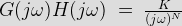

In frequency domain analysis the real part of s - plane is not considered. Therefore, s = σ + jω becomes s = jω. The O.L.T.F (open loop transfer function) can be determined by using 3 techniques –
• Bode plot : Here magnitude and phase angle of G(jω)H(jω) are plotted with respect to ω in the log scale.
• Polar plot : Here the magnitude and phase angle of G(jω)H(jω) are plotted in the same card where ω is varying from 0 to infinity.
• Nyquist plot : Same as polar plot where ω varying from -∞ to +∞.
In this section we will discuss about Bode plot.
The bode plot method gives a graphical procedure for determining the stability of a control system based on sinusoidal frequency response. The transfer function of a system for sinusoidal input response can be obtained by substituting jω in place of Laplace operator s. Therefore, if the open loop transfer function of a system is G(s) H(s), the corresponding sinusoidal open loop transfer function is G(jω)H(jω) which can be expressed in the form of magnitude and phase angle.
The variation of magnitude of sinusoidal transfer function expressed in decibel db and the corresponding phase angle is expressed in degrees being plotted w.r.t frequency on a logarithmic scale i.e (log10 ω) in rectangular axes. The plot thus obtained is known as Bode plot.
The logarithmic bode plot has an advantage that it can be approximated by asymptotic straight lines. Relative stability of a closed loop control system can be conveniently obtained by plotting its open-loop transfer function by Bode plot method. The gain margin and phase margin determined directly from Bode plot. For complicated system Bode lot can also be plotted from experimental results and from there transfer function of the system under test can be obtained.
For plotting magnitude versus log10ω plot each term of G(jω)H(jω) is considered separately. Contributions from each term is taken into consideration.
• Graphs for the gain term K : magnitude in decibel of the term K is given by, K (db) = 20 log10 (K) which indicates that the magnitude is independent of log10ω and as K is considered positive real; the phase angle is always zero whatever may be the value of ω.
• Graphs for the term 1 / (jω)N : magnitude in decibel is given by -20Nlog10ω and phase angle is given by -90° N.
• Graphs for the term (1+ jωT)
• Graphs for the term 1 / (1+ jωT)
The corner frequencies due to first order terms,
,\; (1\;+\; j\omega T_2),\;(1\;+\; j\omega T_3),\;\cdot\cdot\cdot\cdot\cdot\cdot\cdot\cdot \frac{1}{1\;+ j\omega T_a},\;\frac{1}{1\;+ j\omega T_a},\frac{1}{1\;+ j\omega T_c},\cdot\cdot\cdot\cdot\cdot\cdot\cdot\cdot\; etc\; is\; given\; by")

For the frequencies lower than the lowest corner frequency the contribution towards the gain(magnitude in decibel) of the transfer function is nil, therefore, the sinusoidal transfer function for frequencies lower than the lowest corner frequency can be expressed as

The magnitude is 20 log10K - 20Nlog10ω. As N denotes the types of the transfer function, therefore, the initial slope of Bode plot is decided by the type of a system.
| Type of System(N) | Initial Slope | Intersection with 0db Axis at |
|---|---|---|
| 0 | 0 db/decade | Parallel to 0 db axis |
| 1 | - 20 db/decade | ω = K |
| 2 | - 40 db/decade | ω = K1/2 |
| 3 | - 60 db/decade | ω = K1/3 |
| ... | ............ | ..................... |
| ... | ............ | ..................... |
| ... | ............ | ..................... |
| N | - 20N db/decade | ω = K1/N |
Procedure of bode plot :
• Identify the corner frequency
• Draw the asymptotes magnitude plot
• For the type zero system draw a line upto 1st corner frequency (lowest) having 0 db/dec.
• For the type 1 system draw a line having a slope of -20db/dec. upto ω =K mark
• For type 2 system we draw a line having slope of -40db/dec. upto ω =√K and so on
• Now draw a line upto 2nd corner frequency by adding the slope of next pole or zero to the previous slope and so on.
*** On logarithmic scale a decade means a ratio of 10. Sometimes the term octave is used to represent a ratio of 2 on log scale. The relation between octave and decade is given as 20N db/dec = 6N db/octave. From the bode plot we determine gain margin, phase margin, gain cross over frequency, phase crossover frequency and stability. The point where the slope intersects 0db line is called the gain crossover frequency. The point where the the phase plot line crosses the - 180 ° line is called as phase crossover frequency. If we draw a perpendicular line from phase crossover freq. to 0 db line we get gain margin (GM) while we get phase margin (PM) on drawing a line perpendicular from gain cross over frequency to -180 ° line.
*** If both GM and PM re both +ve then system is stable ; GM below 0db line is +ve and PM above -180° line is +ve.
 by
by